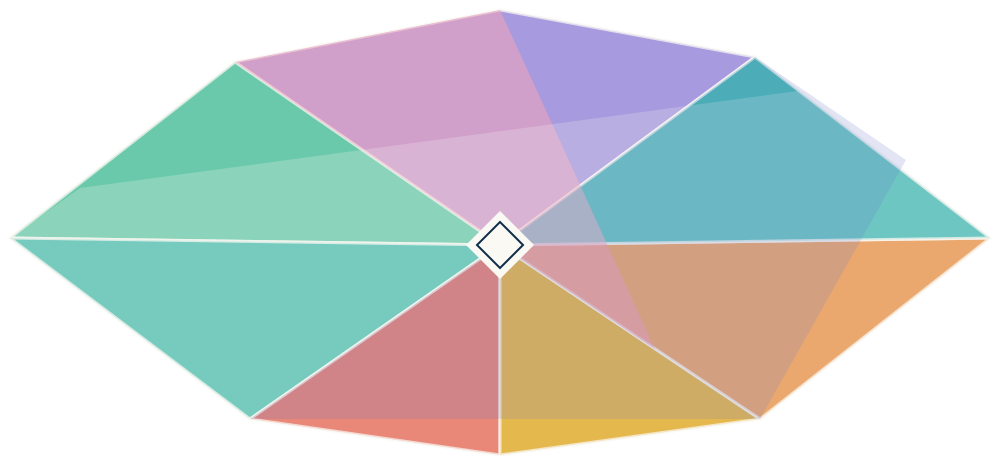

Healthcare
Public health and health systems; initially focused on nonclinical research.
Perspectives
in relation

Human-driven Agentic-Powered-Research.
Open, traceable research in Git.
Six starting areas, with room for related questions and contributions from other fields.
Public health and health systems; initially focused on nonclinical research.
Systems engineering, management, Operations Research, and Decision Science. Initial work excludes physical laboratory experiments.
Bioinformatics, information systems, and Computational Natural Sciences. Initial work excludes physical laboratory experiments.
Health and public economics, incentives, resource allocation, and innovation.
Human judgment, collaboration, organizations, and people working with Agentic-Powered-Research.
Policy analysis, governance, technology policy, and public programs.
People define questions, direct work, and evaluate evidence and conclusions before sharing. Methods include evidence synthesis, meta-analysis, modeling, and simulation.
Proposed
Virtual experiments across the research areas. People would assess the models and evidence and determine which conclusions the results support.
Explore the proposalAcross OSRI, administrators will study and improve research methods, evidence quality, reproducibility, collaboration, and Agentic-Powered-Research.
Explore meta-researchJournal articles, full conference papers, preprints, and substantive research blogs and technical essays. Outputs will be tracked by type and peer-review status; related outputs will be linked to the same research work. Output totals and distinct works can be reported separately.
Founder-led OSRI welcomes you. Read the guide; use the template when ready. Ask or share in Discussions. Bring an agent or work manually; no paid bundle or coding needed to start.